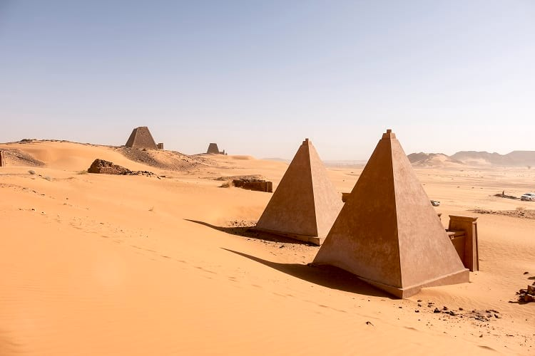

Nubia
Nubian Culture
- Pre-Kerma; A-Group
- -Nubia has one of the oldest civilizations in the world. This history is often intertwined with Egypt to the north. Around 3500 BC, the second "Nubian" culture, termed the Early A-Group culture, arose in Lower Nubia. They were sedentary agriculturalists, traded with the Egyptians and exported gold. This trade is supported archaeologically by large amounts of Egyptian commodities deposited in the A-Group graves. The imports consisted of gold objects, copper tools, faience amulets and beads, seals, slate palettes, stone vessels, and a variety of pots.[36] During this time, the Nubians began creating distinctive black topped, red pottery. The A-Group population have been described as ethnically “very similar” to the pre-dynastic Egyptians in physical characteristics.
- Egypt in Nubia
- -Writing developed in Egypt around 3300 BC. In their writings, Egyptians referred to Nubia as "Ta-Seti", or "The Land of the Bow," as the Nubians were known to be expert archers. More recent and broader studies have determined that the distinct pottery styles, differing burial practices, different grave goods, and site distribution all indicate that the Naqada people and the Nubian A-Group people were from different cultures.
- Kerma; Egyptian Empire
- -From the Middle Kerma phase, the first Nubian kingdom to unify much of the region arose. The Classic Kerma culture, named for its royal capital at Kerma, was one of the earliest urban centers in the Nile region and oldest city in Africa outside of Egypt. The Kerma group spoke either languages of the Cushitic branch or, according to more recent research, Nilo-Saharan languages of the Eastern Sudanic branch.
- Napatan Empire
- -There are competing theories on the origins of the Kushite kings of the 25th Dynasty some scholars believe they were Nubian officials that learned "state level organization" by administering Egyptian-held Nubia from 1500 to 1070 BC, such as the rebel Viceroy of Kush, Panehesy, who ruled Upper Nubia and some of Lower Nubia after Egyptian forces withdrew. Other scholars believe they are descended from families of the Egyptianized Nubian elite supported by Egyptian priests or settlers. Children of elite Nubian families were sent to be educated in Egypt then returned to Kush to be appointed in bureaucratic positions to ensure their loyalty. During the Egyptian occupation of Nubia, there were temple towns with Egyptian cults, but "production and redistribution" was based mostly on indigenous social structures.
